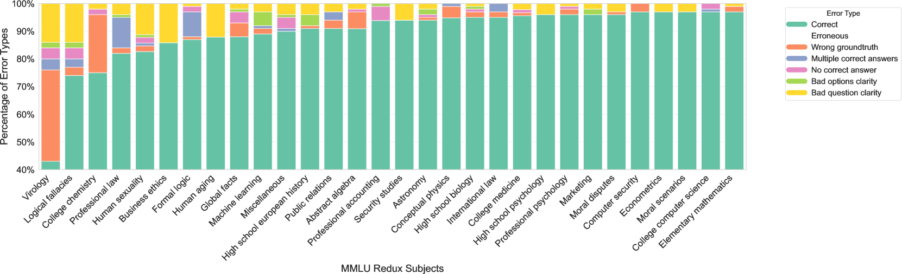

The lab that ships an MMLU score rarely says how it was measured
GPT-4's headline 86.4% on MMLU shipped with its five-shot count and little else — not the prompt template, not the scoring rule, not the harness that turned 57 subjects of multiple choice into a single number.
Prior Context
A single benchmark number decides which model a company buys and which one a headline crowns, and almost no one who repeats the number can say how it was produced. MMLU is the number that does this most often, so knowing how it is scored is the difference between reading a capability and reading a measurement. The four-option format returns wherever a score jumps on reformatting, because the format is what a paraphrase or a shuffle disturbs. The training cutoff returns wherever a clean number hides a dirty one, because contamination is the test set crossing into the data the model learned from. The keyed answer returns wherever a benchmark's own errors reshuffle a ranking, because a wrong key scores knowledge as ignorance and ignorance as knowledge.
- Prior Rebuild ImageNet's test set and the top model loses eleven points: the distinction between what belongs to a fixed test set and what belongs to the model, which MMLU is one instance of.
- Prior Move a tumor detector to a new hospital and it loses twenty-three points: the distance between the test distribution and where the model runs, which contamination collapses to zero in the wrong direction.
The shipped score without its method
OpenAI's 2023 technical report for GPT-4 leads its capabilities table with one figure: 86.4% on MMLU, measured five-shot.1 The table sets that number beside GPT-3.5's 70.0%, and the gap between them is the headline.1 Grant it. The score is real, reproducible in principle, and it did what such a number is built to do, moving procurement shortlists and press coverage before most readers could name the test. MMLU is the Massive Multitask Language Understanding benchmark, and its one accuracy figure headlines announcement after announcement.
What the report states about how that figure was made is the few-shot count, five-shot, and little else in the main text.1 It does not give the prompt template, whether scoring read the model's log-likelihood over the four option letters or parsed a letter out of generated text, or the harness that ran it.1 None of that is bad faith. The same report runs contamination checks and reports the lower score when exam questions were seen in training.1 The trouble starts one step later, when a reader treats 86.4% as a property of the model rather than the output of one measurement procedure among many.
How one four-option item is graded
The instrument is a fixed list. Hendrycks and co-authors assembled 15,908 multiple-choice questions across 57 subjects, split into a five-per-subject development set, a 1,540-item validation set, and a 14,079-item test set.2 Every item has four options, A through D, and exactly one is keyed correct, so blind guessing scores 25%.2
To grade one item, the harness prepends up to five solved examples drawn from the development set, the five shots, then presents the new question with its four options.2 One common scoring method reads the model's probability for each option letter and takes the highest; another parses a letter out of generated text. The keyed letter is then right or wrong, and accuracy is the fraction of items right. The largest GPT-3 model scored 43.9% this way, against 34.5% for non-expert humans hired online and about 89.8% for subject experts.2 For roughly three years the number sorted models sensibly, which is why it spread. Its trouble is in the reading of a bare figure, not in the test itself.
What the grading pays for besides knowledge
Four options with one key rewards more than subject knowledge; it also pays out for reading the options. Move the correct answer to a fixed position and scores move with it. In one controlled remap, sending every correct answer to slot D dropped gpt-3.5-turbo by 6.3 points, from 67.2 to 60.9, while sending them to slot A lifted a 30-billion-parameter LLaMA by 15.2 points, from 53.1 to 68.2.3 The models carry a standing preference among the letters, that LLaMA picking A far more often than D regardless of content, so part of any score is a bet on where the answer tends to sit.3
The options can also carry the answer with the question deleted. Balepur and co-authors fed models only the answer choices, no question at all, and the choices-only prompt beat a majority-class baseline in 11 of 12 model-and-dataset cases, with accuracy gains up to 0.33.4 The effect is partly inference from the options rather than pure memorization, which is worse for the reading of the score, not better: the four choices leak enough about the answer to beat guessing on their own.4 The reverse mask, question shown and options hidden, cannot be scored the same way, because with no options the task is open generation and "above chance" has no meaning. The documented shortcut runs through the choices.
Why two MMLU numbers rarely mean the same thing
If the format rewards position and option-reading, then the exact format decides the score, and two labs rarely run the exact same format. Alzahrani and colleagues perturbed only the evaluation format, shuffling the choice order and changing how the answer is extracted, and watched models move up to eight places on a leaderboard.5 Yi-6b lost 8.3 points and fell from third to ninth under choice shuffling alone.5 Scoring by the option letter and scoring by matching the option text disagreed sharply on MMLU, while the few-shot count mattered less, with rankings holding fairly stable as it changed.5
Set that swing beside the numbers it competes with. Wang and co-authors found that prompt-format changes alone moved MMLU scores by 4 to 5 percent on average, and by as much as 10.98 percent at the extreme.6 Frontier models had meanwhile bunched at 86 to 87 percent, where GPT-4 landed in early 2023 and where progress stalled.6 A formatting choice worth several points is larger than the gap between two announcements clustered a point apart, so the format can reorder them before any capability does.
The percent measures accuracy on a fixed item set under one harness and one few-shot count. It is offered as evidence of understanding across the 57 subjects the name lists. For the second to follow from the first, the format would have to be neutral to everything but knowledge, and it is not. As Melanie Mitchell writes, surpassing humans on a benchmark named after a general ability is not the same as surpassing them on that ability.7
When the number was real and the knowledge was not
Two documented cases show a genuine MMLU number scored on something other than the knowledge it advertises. The first is the instrument's own errors. Gema and colleagues re-annotated MMLU with 14 experts and estimated that 6.49% of its questions contain errors: wrong keys, no correct option, several correct options, or unanswerable phrasing.8 The rate is far from even. In Virology, 57% of the sampled items were faulty.8

Correcting the keys does not simply lower everyone's score. On the re-annotated set some models climb and others fall: a 405-billion-parameter Llama moved from 16th to 1st on Virology once the bad items were fixed, while GPT-4 fell from 0.91 to 0.43 exact-match on Human Sexuality.8 Rankings are unstable to the benchmark's own mistakes, not lowered by one fixed amount.
The second case is contamination: test items sitting in the training data, so the model has already seen the answer. Narayanan and Kapoor made the mechanism visible on a different benchmark by splitting problems at the training cutoff, near-perfect before it and near-zero after at the same difficulty, the signature of memorization rather than skill.9 On MMLU itself, Microsoft's decontaminated rebuild sized the effect in one comparison: GPT-4o scored 88.0% on the original MMLU and 73.4% on MMLU-CF, a 20,000-item test drawn from documents published after the model's cutoff, a five-shot gap of 14.6 points.10 That gap comes from a rebuilt test, not a direct count of leaked items, and third-party leakage estimates for MMLU range widely by method, so 14.6 is this method's figure rather than a constant.10 The direction is not in doubt. Part of the original 88 was scored on questions the model had read before.
The four questions that price a percent
An MMLU percentage is worth what its measurement conditions are worth, and four questions recover them. Which harness and how many shots produced it, since format and answer-extraction can move a model eight leaderboard places and two numbers measured differently are not comparable.5 Is the evaluation set contaminated, since a clean rebuild cut a frontier model by more than 14 points.10 How far does the score travel under paraphrase and option-shuffling, since a reformatting swing can outweigh the reported gap between two models.6 And what does the model score on the answer choices alone, with the question hidden, since the options by themselves already beat a naive baseline.4
A score that arrives with all four answers can be compared, and trusted to the degree they hold. A score reported without them is not yet a measurement anyone else can check.
Sources
- OpenAI · GPT-4 Technical Report (2023)
- Hendrycks et al. · Measuring Massive Multitask Language Understanding (2020/2021)
- Zheng et al. · Large Language Models Are Not Robust Multiple Choice Selectors (2023/2024)
- Balepur, Ravichander & Rudinger · Artifacts or Abduction: How Do LLMs Answer Multiple-Choice Questions Without the Question? (2024)
- Alzahrani et al. · When Benchmarks are Targets: Revealing the Sensitivity of LLM Leaderboards (2024)
- Wang et al. · MMLU-Pro (2024)
- Melanie Mitchell · "AI now beats humans at basic tasks": Really? (2024)
- Gema et al. · Are We Done with MMLU? (2024/2025)
- Narayanan & Kapoor · GPT-4 and professional benchmarks: the wrong answer to the wrong question (2023)
- Zhao et al. (Microsoft) · MMLU-CF: A Contamination-free Multi-task Language Understanding Benchmark (2024)